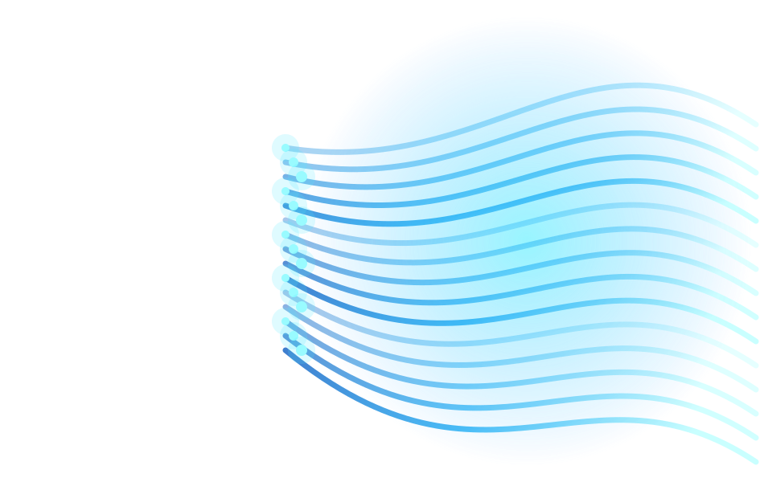

Glasvezel Friesland B.V.
Beheer en exploitatie van dark fiber (glasvezelinfrastructuur).
Meer over het netwerk ›Dark fiber infrastructuur voor organisaties die zelf de regie willen houden over hun verbindingen.
Ontdek dark fiber →
De fysieke glasvezelinfrastructuur vormt de basis waarop professionele netwerkdiensten kunnen worden gerealiseerd.
Beheer en exploitatie van dark fiber (glasvezelinfrastructuur).
Meer over het netwerk ›Een herkenbare naam voor samenwerking en oplossingen rondom dark fiber infrastructuur.
Wat is dark fiber? ›Bij dark fiber worden passieve glasvezels beschikbaar gesteld, zonder dat daar standaard een actieve internetdienst bij hoort.
De passieve verbinding vormt de basis tussen locaties.
De afnemer kiest zelf apparatuur en actieve netwerkdiensten.
Mogelijkheden zijn afhankelijk van de beschikbare vezels en apparatuur.
Bereikbaar via het onderstaande e-mailadres.